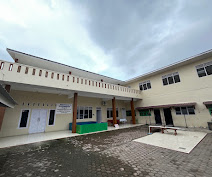
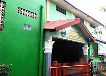
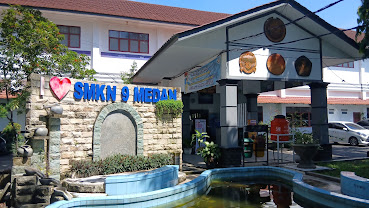
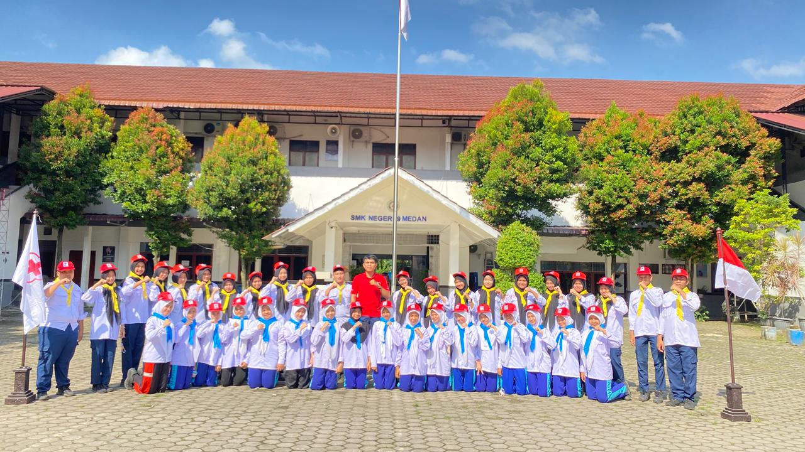
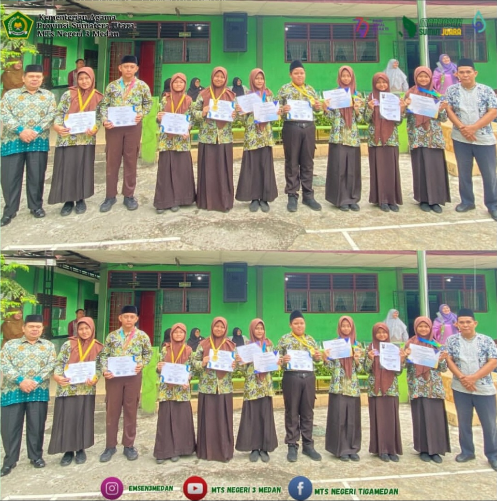

Riwayat Sekolah
-
SD : SD Swasta Citra Indonesia

-
SMP : MTs Negeri 3 Medan

-
SMK : SMK Negeri 9 Medan

Pengalaman Organisasi dan Prestasi
| Foto | Jenis Kegiatan | Keterangan |
|---|---|---|
 |
Organisasi PMR | Latihan gabungan PMR Wira Unit 079 SMK Negeri 9 Medan bersama PMR Madya Unit 045 SMP Negeri 9 Medan |
| Foto | Jenis Kegiatan | Keterangan |
|---|---|---|
 |
Lomba olimpiade | Mendapatkan medali emas pada olimpiade di bidang Bahasa Inggris Tahun 2025. |
Hobi
Membaca Novel ✓
Membaca novel bagi saya adalah cara terbaik untuk bersantai, mengasah imajinasi, dan melihat dunia dari berbagai perspektif yang berbeda.
Mendengarkan Musik ✓
Mendengarkan musik secara mindful (sadar penuh) di waktu istirahat untuk memulihkan energi dan menjaga kesehatan mental.